敵とゲームオーバー 〜ゲームらしいルール〜
🎯 この章でできるようになること
- 穴に落ちたら、ステージの最初からやり直しになるようにできる
- オブジェクト変数を使って、左右に往復する敵を作れる
- 条件を2つ組み合わせて「上から踏んだら倒す」を作れる
- イベントの順番が結果を変えることを説明できる
※ 前回のプロジェクトが開けない・壊れてしまった人は、講師を呼んでね。
この章は、Player・地面・カメラのイベントがあれば始められます（コインとスコアは後から追いつけばOK）。
4-1. ゲームらしいルールを考えよう
今のゲームは、穴に落ちてもずっと落ち続けるし、こわいものが何もありません。
「失敗することがある」から、ゲームはドキドキして楽しくなります。
この章で作るルールはこの3つ。
| ルール | 条件（もし〜なら） | アクション（〜する） |
|---|---|---|
| 落ちたらやり直し | Playerが画面のずっと下まで落ちた | Stage1を最初からやり直す |
| 踏んだら倒せる | Playerが落ちながらEnemyにさわった | Enemyを消して、Playerを少し跳ねさせる |
| 当たったらやり直し | Playerが（それ以外の形で）Enemyにさわった | Stage1を最初からやり直す |
4-2. 穴に落ちたらやり直しにしよう
第1章の課題3で調べたように、GDevelopでは下へ行くほどYの数字が大きくなります。
だから「PlayerのYが、いちばん低い地面よりもっと大きくなった」＝「穴に落ちた」と判断できます。
シーンエディタで、いちばん低い地面を選んでプロパティの Y を見ます。
その数字より300くらい大きい数を、「落ちた」と判断するラインにしよう。
たとえば地面のYが 620 なら、ラインは 920 です。
イベントシートで「新しいイベントを追加」→「条件を追加」→ 位置 と検索。
「Y座標」と検索してもヒットしないので、「位置」で探すのがコツです。
候補の中から「Y 座標」（全般 › オブジェクト › 位置）を選びます（「X 座標」のすぐ下）。
「オブジェクト」に Player、「テスト記号」（比べ方）を「>（より大きい）」、「比較する値」に決めたラインの数字を入れて「OK」。
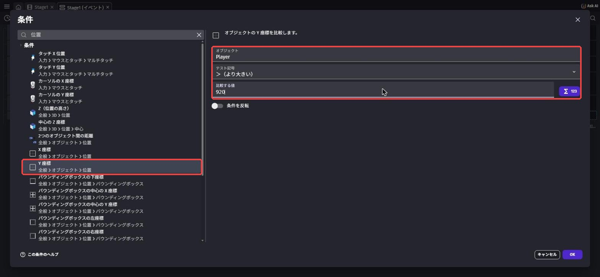
「アクションを追加」→ シーンを変更 と検索して、いちばん上の「シーンを変更する」（全般 › シーン）を選びます。
シーン だけで検索すると候補が多すぎて見つけにくいので注意。
「新しいシーンの名前」（切り替え先のシーン）で Stage1 を選んで「OK」。
今いるシーンと同じシーンに切り替えると、シーンが最初からやり直しになります。
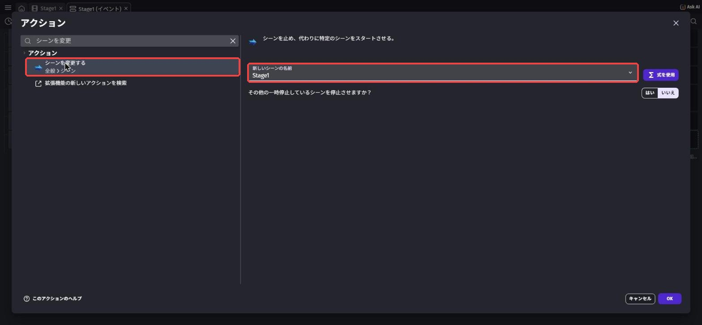
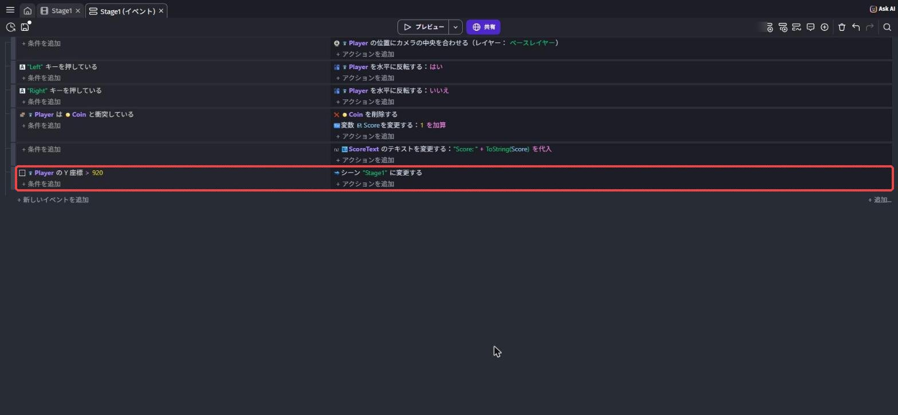
Player の Y 座標 > 920Stage1" に変更するプレビューでわざと穴に落ちてみよう。
スタート地点に戻れば成功！
取ったコインも元に戻り、Score も 0 からになっているはずです（シーンごとやり直しになるため）。
4-3. 敵（Enemy）を用意しよう
オブジェクトパネルの「＋」からアセットストアで slime や enemy と検索します。
横から見た敵を選んで追加し、名前を Enemy にしよう。
この教科書では「slime normal」（ライセンスはCC0）を使っています。
地面の上、少し進んだ場所に1体置きます（右クリック →「シーンにインスタンスを追加」で置いて X・Y を直してもOK）。
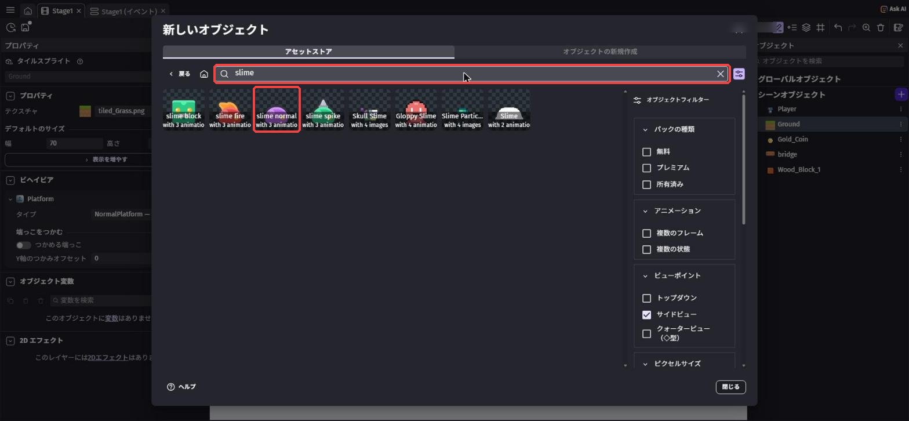
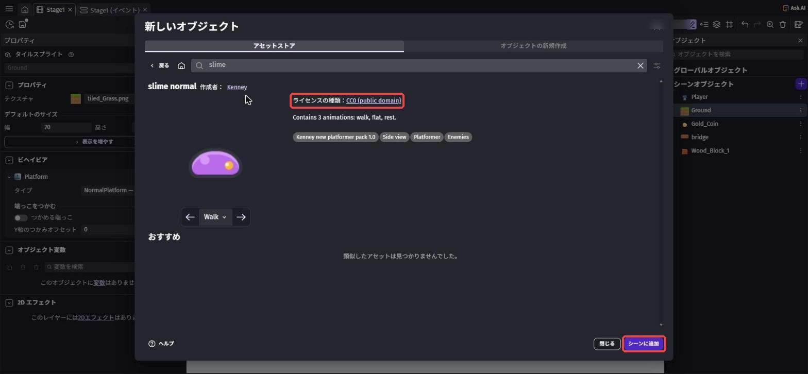
敵も地面の上を歩いてほしいので、Enemy にも「プラットフォームキャラクター」ビヘイビアをつけます。
ビヘイビアを探すときは プラットフォーム で検索しよう（検索欄に前回の文字が残っていたら、消してから入力）。
ただし、このままだとキミのキー操作で敵まで動いてしまいます。
ビヘイビアの設定のいちばん上にある「デフォルトのキーボードコントロールを無効にする」（いつものキー操作を使わない）をONにしておこう。
ついでに「最高速度」を Player より小さい数（120 くらい）にしておくと、のんびり歩く敵になるよ。
数字を入れる欄はとなりどうしで似ているので、「スロープの最大角度」など別の欄を変えないように気をつけよう。
🚨 ビヘイビアの右上の「－」は押さない
左のプロパティのビヘイビア名の右はしにある「－」は、そのビヘイビアを消すボタンです。
押すと「消しますか？」と聞かれるので、まちがえたら「キャンセル」を押そう。
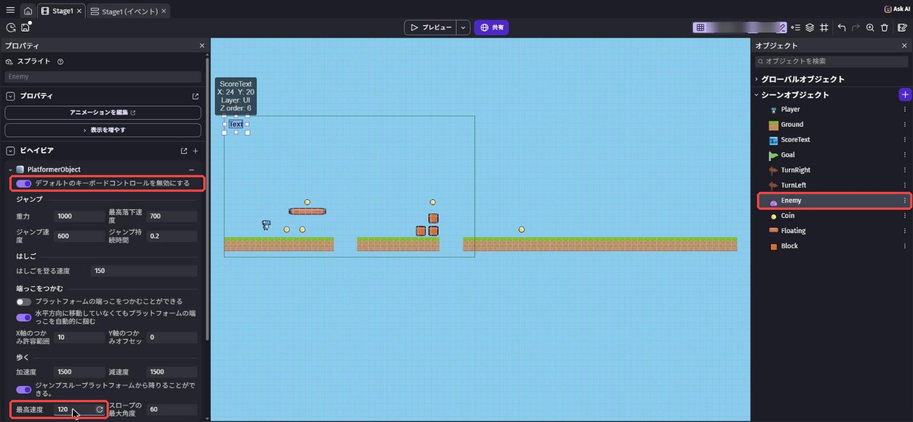
4-4. 敵に「今どっち向きか」を覚えさせよう
敵を左右に往復させるには、敵ごとに「今、右へ進んでいるか」を覚えておく必要があります。
第3章ではシーン全体で1つの箱（シーン変数）を使いましたが、今回は敵1体ずつに持たせる箱、オブジェクト変数を使います。
敵が3体いれば、箱も3つ。
だから「この敵は右へ、あの敵は左へ」と、別々に動かせるんだ。
「右へ進んでいる？」→ はい／いいえ、のような質問の答えを覚えるのにぴったり。
オブジェクトパネルで Enemy を選ぶと、左のプロパティの下のほうに「オブジェクト変数」が出ます。
その右の「＋」を押すと、新しい変数が1行（Variable）できます。
名前を GoingRight にして Enter。
名前の右の「123」のマーク（種類）を押して 真偽値 を選び、右はしの「⇄」ボタンで値を 真 にします。
ダブルクリックで開く「Enemy を編集」の「変数」タブで作ってもOKです。
これで「最初は右へ進む」敵になります。
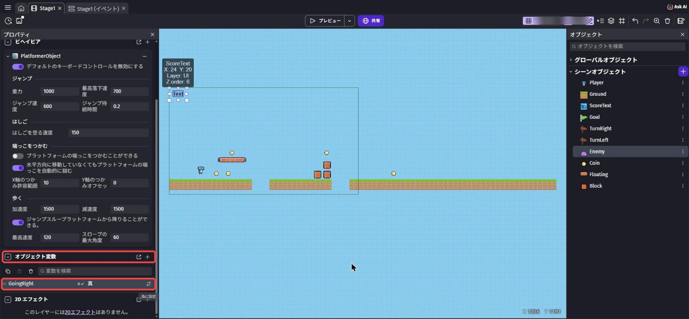
4-5. 折り返しの目印を置こう
敵が「どこで向きを変えるか」の目印を置きます。
目印にさわったら向きを変える、というルールにするんだ。
右はしに TurnLeft（左へ向かえ）、左はしに TurnRight（右へ向かえ）を置く
アセットストアで sign と検索し、小さな看板や矢印など目印になりそうな素材を選びます（この教科書では「ArrowSign」）。
「シーンに追加」を押すと、ボタンが「もう一度追加」に変わるので、続けてもう1回押そう。
同じ素材のオブジェクトが2つできるので、名前をそれぞれ TurnLeft と TurnRight に変えます。
目印にはビヘイビアをつけません。
敵が歩いてほしい範囲の右はしに TurnLeft、左はしに TurnRight を置きます。
敵と同じ高さ（地面の上）に置いて、敵が歩いてきたら必ず重なる位置にしよう。
プロパティの Y を「地面の Y − 目印の H」にすると、ちょうど地面の上に立ちます（地面が Y 620、目印の高さが 44 なら Y 576）。
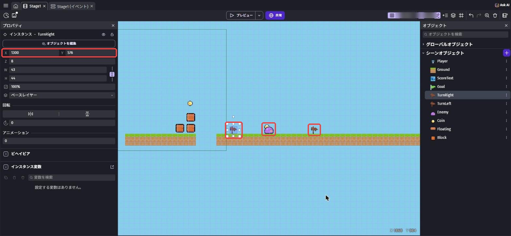
目印はプレイヤーに見えなくていいので、ゲームが始まった瞬間にかくします。
「新しいイベントを追加」→「条件を追加」→ シーンが始まった と検索して「シーンが始まった」（全般 › シーン）を選んで「OK」（「開始」で検索すると候補が多すぎるので注意）。
設定する欄はありません（「設定するものはありません。」と出ます）。
アクションは 非表示 と検索していちばん上の「非表示」（かくす、全般 › オブジェクト › 可視性）を選び、「オブジェクト」を TurnLeft にします。
同じイベントにもう1つ「非表示」を足して、TurnRight もかくそう。
TurnLeft を非表示にするTurnRight を非表示にする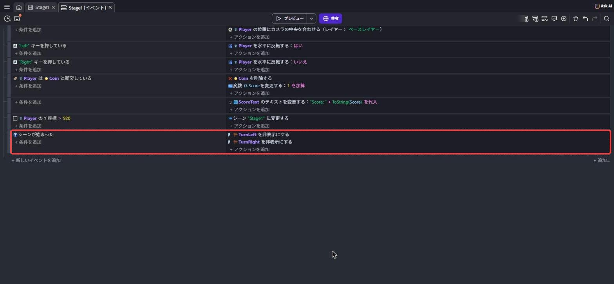
4-6. 敵を往復させるイベントを作ろう
いよいよ敵を動かします。
キー操作を使わない設定にした敵は、自分では動きません。
そこで、イベントで「右キーが押されたふり」をさせて動かします。
「新しいイベントを追加」→「条件を追加」→ オブジェクト変数 と検索して、いちばん上の「オブジェクト変数の値」（全般 › オブジェクト › 変数）を選びます。
「オブジェクト」に Enemy、「変数」に GoingRight と入れます。
GoingRight は真偽値なので、下に「比較する値：」と 真／偽 のボタンが出ます。
真 を押して「OK」。
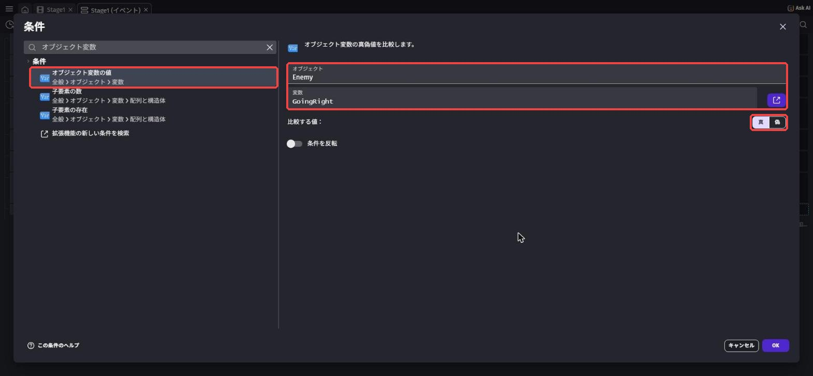
アクションは 右キー と検索して「右キー押下をシミュレートする」（右キーを押したふり）を選び、「オブジェクト」に Enemy を指定して「OK」。
同じ名前が2つあります。
下に「移動 › プラットフォームビヘイビア › プラットフォームのコントロール」と書いてあるほうを選ぼう（「トップダウン移動」のほうではありません）。
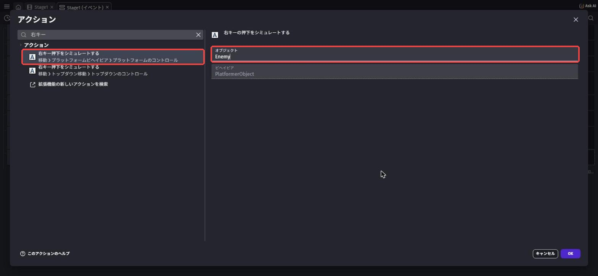
同じようにイベントをもう1つ。
条件は Enemy の GoingRight が 偽、アクションは 左キー と検索して「左キー押下をシミュレートする」（こちらもプラットフォームビヘイビアのほう）です。
さらにイベントを2つ作ります。
条件は 衝突 と検索して「衝突」（全般 › オブジェクト › 衝突）を選び、Enemy と TurnLeft。
アクションは オブジェクト変数の値 と検索して「オブジェクト変数の値を変更」（全般 › オブジェクト › 変数）を選びます。
「オブジェクト」に Enemy、「変数」に GoingRight、「値」を「偽に設定」にします。
もう1つは Enemy と TurnRight の衝突で、GoingRight を「真に設定」に。
設定欄の上に「Toggle States With A Variable」というチュートリアルの案内が出ることがありますが、気にしなくてOKです。
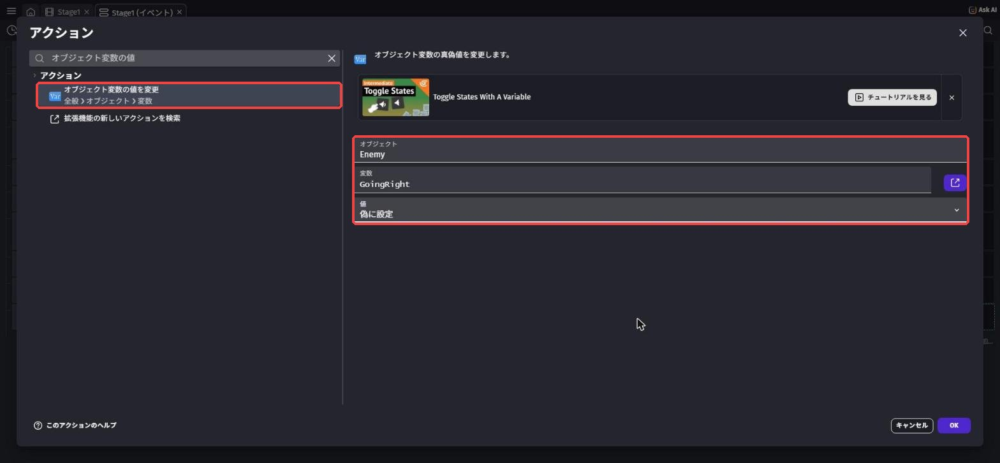
Enemy の変数 GoingRight は 真 であるEnemy の右キー押下をシミュレートするEnemy の変数 GoingRight は 偽 であるEnemy の左キー押下をシミュレートするEnemy は TurnLeft と衝突しているEnemy の変数 GoingRight を変更する：偽に設定Enemy は TurnRight と衝突しているEnemy の変数 GoingRight を変更する：真に設定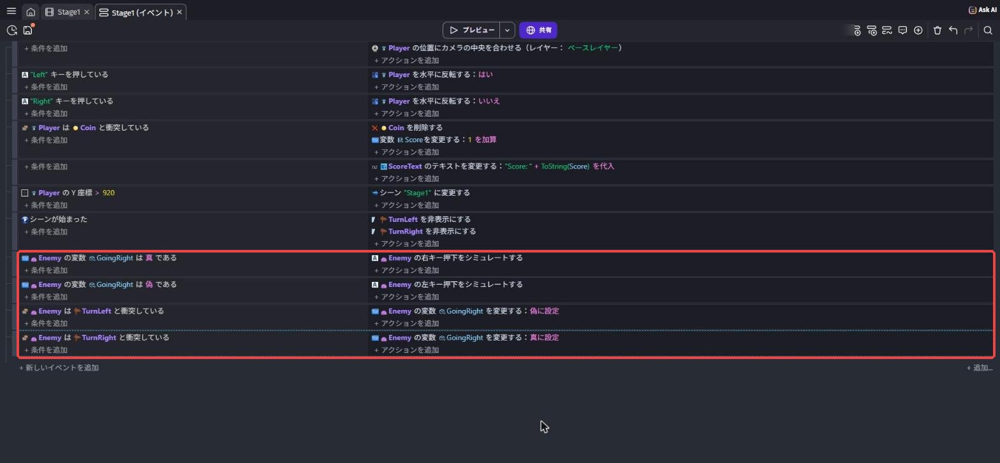
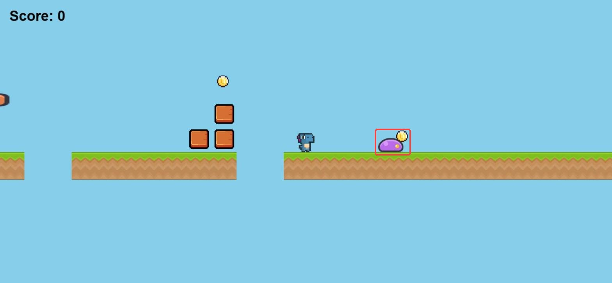
プレビューで、敵が目印のあいだを行ったり来たりすれば成功！
敵の向き（絵の左右）も変えたい人は、第3章のキャラの向きと同じように「オブジェクトを水平方向に反転させる」（検索「反転」）をイベントAとBに足してみよう。
4-7. 踏んだら倒す・当たったらやり直し
最後に、Playerと敵がさわったときのルールです。
ポイントは「上から踏んだのか、横からぶつかったのか」をどう見分けるか。
答えは、Playerが落ちている最中にさわったら「踏んだ」とみなすこと。
「新しいイベントを追加」で、1つ目の条件に「衝突: Player と Enemy」を入れます。
同じイベントの左側で、もう一度「条件を追加」を押して、落下 と検索。
「落下中である」が2つ出るので、「移動 › プラットフォームビヘイビア › プラットフォームの状態」のほうを選び（「3D物理エンジン」のほうではありません）、「オブジェクト」に Player を指定します。
1つのイベントに条件を2つ並べると、「両方ともYESのときだけ」アクションが実行されます。
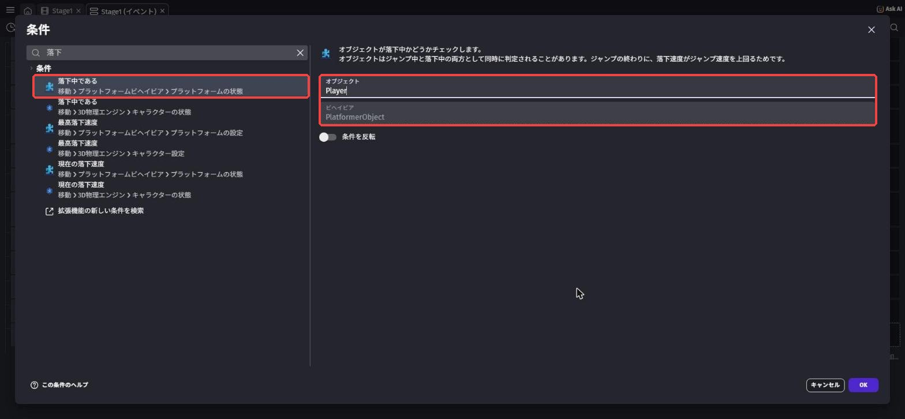
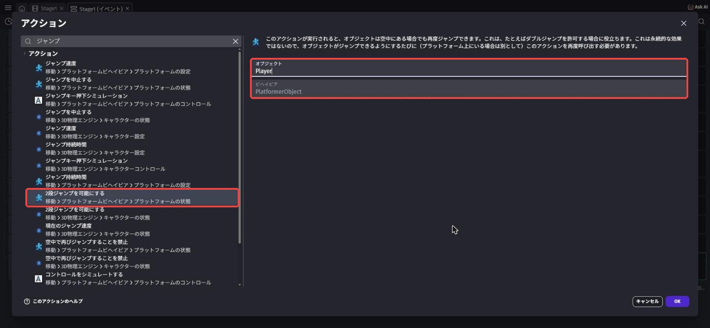
アクションは3つです。
オブジェクトを削除と検索して「オブジェクトを削除する」でEnemyを消すジャンプと検索して、「2段ジャンプを可能にする」（もう一度ジャンプできるようにする、プラットフォームビヘイビア › プラットフォームの状態 のほう）をPlayerにジャンプキーと検索して、「ジャンプキー押下シミュレーション」（ジャンプキーを押したふり、プラットフォームビヘイビア › プラットフォームのコントロール のほう）をPlayerに
2つ目のアクションがないと、空中ではジャンプできないので跳ねてくれません。
「2段ジャンプを可能にする」は、イベントシートでは「Playerに再ジャンプを許可する」と表示されます。
名前がちがって見えても同じものなので安心してね。
「踏んだ」イベントのすぐ下に、もう1つイベントを作ります。
条件は「衝突: Player と Enemy」だけ、アクションは「シーンを変更する: Stage1」。
Player は Enemy と衝突しているPlayer は落下中であるEnemy を削除するPlayerに再ジャンプを許可するPlayerのジャンプキー押下シミュレートPlayer は Enemy と衝突しているStage1" に変更する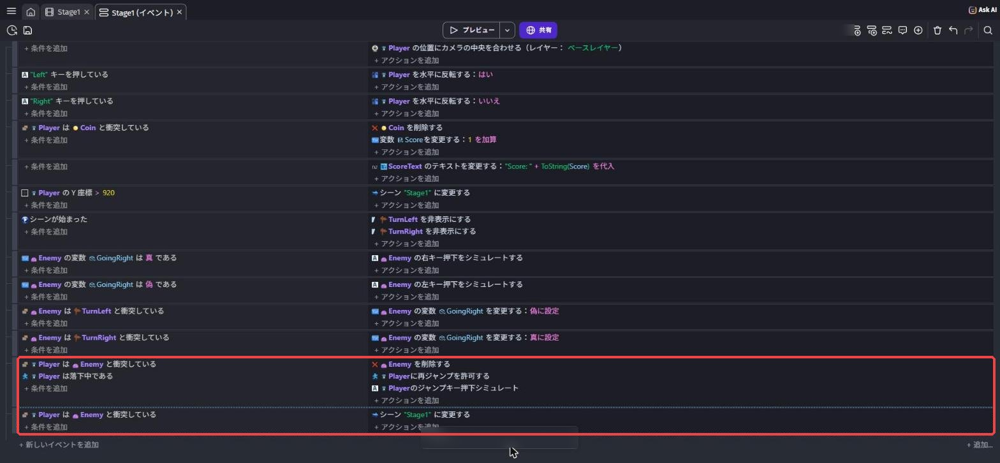
🚨 イベントの順番が大事なワケ
イベントは上から順番にチェックされます。
上から踏んだときは、先にイベントEで敵が消えるので、すぐ下のイベントFでは「さわっている敵」がもういません。
だから、やり直しにならずにすむんだ。
もしEとFの順番が逆だと、踏んだ瞬間にFが先に実行されて、やり直しになってしまいます。
イベントはドラッグで上下に並べかえられるよ。
この教科書では、敵にもプラットフォームキャラクターをつけて重力で地面を歩かせ、「イベントの順番」で踏んだのか当たったのかを見分けています。
どちらのやり方でも動くので、余裕がある人はもう1つのやり方もためしてくらべてみよう。
敵を上から踏むと消えて、Playerがぴょんと跳ねる。
横からぶつかるとスタートに戻る。
両方できれば大成功！
Ctrl + S⌘ + S で保存しよう。
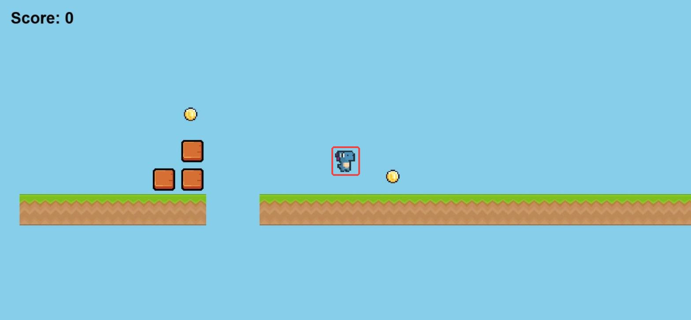
4-8. 💪 やってみよう
課題1: 敵を増やそう
ステージのほかの場所にも敵を置こう。
それぞれの敵の両はしに、TurnLeft と TurnRight を置くのを忘れずに。
イベントは追加しなくても、新しい敵も往復するはず。
なぜイベントを増やさなくていいのか、説明できたら合格。
ヒントを見る
イベントは「Enemy という設計図から作ったもの全部」に効くよ。
そして GoingRight はオブジェクト変数なので、敵1体ずつが自分の箱を持っている。
だから、それぞれ別々に往復できるんだ。
課題2: トゲを作ろう
さわったらやり直しになる Spike（トゲ）を作って、ステージに置こう。
トゲは踏んでもダメ、という点が敵とのちがいです。
ヒントを見る
イベントFとほとんど同じイベントで作れるよ。
さわる相手を Enemy から Spike に変えるだけ。
トゲやノコギリなど「さわったらアウト」のものが増えてきたら、オブジェクトグループが便利です。
たとえば、SawとSpikesを Hazards（危険なもの）というグループにまとめると、「Player は Hazards と衝突している」の1つのイベントでまとめて判定できます。
グループは、エディタの右上にあるオブジェクトグループのパネルから作れるよ。
課題3（チャレンジ）: 速さのちがう敵を作ろう
素早く動く敵 FastEnemy を作ってみよう。
見た目も変えて、「この敵は速い！」とわかるようにできたら合格。
ヒントを見る
新しいオブジェクトにすると、イベントA〜Fをもう一度作る必要があります。
イベントをコピーして、Enemy の部分を FastEnemy に書きかえるとラク。
速さはビヘイビアの「最高速度」などで変えられるよ。
4-9. 🚨 つまずきポイント集
自分が矢印キーを押すと、敵まで一緒に動く
原因: Enemy のプラットフォームキャラクターで「デフォルトのキーボードコントロールを無効にする」がOFFのまま。
直し方: Enemy のビヘイビア設定で、「デフォルトのキーボードコントロールを無効にする」をONにしよう。
敵が目印で折り返さない（通り過ぎて落ちていく）
原因1: 目印が敵の通り道と重なっていない（高さがずれている、地面にうまっている）。
→ 目印を、敵とちょうど同じ高さに置き直そう。
原因2: TurnLeft と TurnRight を逆に置いている。
→ 右はしが TurnLeft、左はしが TurnRight だよ。
原因3: イベントCとDで、「真に設定」と「偽に設定」が逆になっている。
上から踏んでも、やり直しになってしまう
原因1: 「当たったらやり直し」のイベントFが、イベントEより上にある。
→ イベントをドラッグして、Eを上・Fを下にしよう。
原因2: イベントEの条件に「Player は落下中である」が入っていない、または別のイベントに分かれている。
→ 2つの条件が同じイベントの左側に並んでいるか確認しよう。
穴に落ちても、やり直しにならない
原因: Yの比べ方が逆（< にしている）、またはラインの数字が大きすぎる。
直し方: テスト記号が「>（より大きい）」になっているか確認しよう。
下へ行くほどYは大きくなる、を思い出してね。
ラインは「いちばん低い地面のY＋300」くらいが目安です。
プレビューで目印が見えてしまう
原因: 目印をかくすイベントがない、または条件が「シーンが始まった」になっていない。
直し方: 4-5の手順3のイベントを確認しよう。
💡 15分たっても直らないときは、次の「AIを味方につけよう」の方法で相談してみよう。
4-10. 🤖 AIを味方につけよう
イベントが増えてきたら、AIに相談するときは関係するイベントだけを、上からの順番どおりに書き写そう。
今回のように「順番」が原因のバグもあるからです。
この章でのAIの使い所
✅ 良い使い方 — 自分で15分考えてわからなかったら聞く
- 順番のバグ探し: イベントを順番どおりに書き写して、どこで問題が起きているか一緒に追いかけてもらう
- しくみの理解: 「オブジェクト変数とシーン変数のちがい」など、説明できるようになるまで聞く
そのままコピペで使えるプロンプト（AIへの指示文）の例:
敵を上から踏んで倒したいのに、踏むとステージの最初に戻ってしまいます。
イベントは上から順に次のとおりです。
イベント1: 条件「Player は Enemy と衝突している」／アクション「シーン "Stage1" に変更する」
イベント2: 条件「Player は Enemy と衝突している」「Player は落下中である」／アクション「Enemy を削除する」
答えを言わずに、原因に気づけるヒントをください。
敵ごとに向きを覚えさせるとき、どちらを使うべきかも教えてください。
🚫 やめておこう
- 敵のイベントをAIに全部作らせて写す（条件を組み合わせて考えるのがこの章の練習！）
- AIの答えを試して確かめずに信じる（AIは古いGDevelopの条件名やアクション名を答えることがある。
必ず自分の画面で検索して確認）
4-11. ✅ チェックリスト
全部チェックできたら第4章クリア！
🎉 次回は、ゴールを作ってクリア画面へ。
タイトル画面や効果音もつけて、「1本のゲーム」としてつながった形にするよ。
4-12. 📚 もっと知りたい人へ
- 公式プラットフォーマーチュートリアル Part 6・Part 7（英語） — 敵の作り方と「踏んで倒す」の公式版。この教科書とはちがう方法なので、くらべてみよう
- プラットフォームキャラクター（Platformer character）の解説（公式Wiki・英語） — ページの下のほうから、使える条件・アクションの一覧へ進める
- GDevelop公式Wiki（英語） — 「Variables」（変数）のページで、オブジェクト変数の公式説明が読める